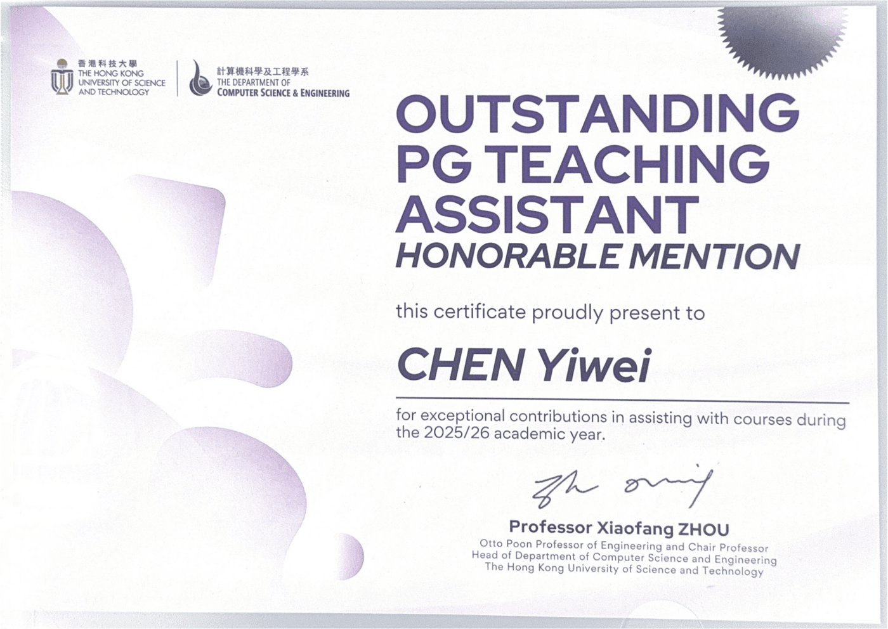

Live · Web app · 2026
MarineChat
Ask the ocean anything.
Drop in an underwater photo: MarineChat finds every creature, describes each one and answers your questions. Built on MarineInst.
Try MarineChatGood afternoon
HKUST · Computer Science and Engineering
Marine Vision Intelligence
PhD candidate at CSE, The Hong Kong University of Science and Technology.
New MarineChat · Ask the ocean anything“Every Cloud Has a Silver Lining.”
01
I am Yiwei Chen, also Jackson, a third-year PhD candidate in the Department of Computer Science and Engineering at The Hong Kong University of Science and Technology.
I work on computer vision for marine and biology studies: recognition, and the problems that sit between 2D and 3D vision. At HKUST I work closely with Prof. Ziqiang Zheng (UESTC) and am supervised by Prof. Sai-Kit Yeung.
If you would like to talk about the work, or about a collaboration, write to jackson.chen.yiwei@gmail.com or ychenmb@connect.ust.hk.
02
Live · Web app · 2026
Ask the ocean anything.
Drop in an underwater photo: MarineChat finds every creature, describes each one and answers your questions. Built on MarineInst.
Try MarineChat03
RA-L · 2026
WACV · 2026
Oral
ECCV · 2024
OralOral Presentation Award
arXiv · 2024
04
05
Education
PhD, Computer Science and Engineering
The Hong Kong University of Science and Technology
MSc, Information Technology
The Hong Kong University of Science and Technology
BEng, Telecommunications
Huazhong University of Science and Technology
As an undergraduate at the School of Electronic Information and Communications, HUST, I joined Prof. Xiaojun Hei’s innovation program and completed my final-year project with Prof. Xinggang Wang.
Teaching
COMP 2211 Exploring Artificial Intelligence
Spring 2025COMP 2211 Exploring Artificial Intelligence
Fall 2025MSBD 6000Q Vision Language Models for Vision Tasks
Fall 2025Visiting
Visiting student, UESTC, Chengdu
Aug – Nov 2026Awards
Top Reviewer, NeurIPS 2026
2026Outstanding PG Teaching Assistant Honorable Mention
Department of Computer Science and Engineering, HKUST
